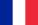
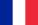
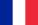
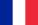

Lorenzo FANTINI
Goethe-Universität Frankfurt
 



Je suis un mathématicien, actuellement chercheur postdoctoral de la Fondation Alexander von Humboldt au sein de l'équipe Algebra und Geometrie de l'Institut für Mathematik, Goethe-Universität Frankfurt am Main.
News alert! →
Les prochaines séances de Tropical Geometry in Zoom, une série de séminaires que je co-organise avec Martin Ulirsch, auront lieu en ligne les vendredis 19 février et 12 mars.
→
Le colloque sur la géométrie non archimédienne et la géométrie tropicale que je co-organise avec Martin Ulirsch et Annette Werner a été reporté.
Voici la page web de la rencontre, qui aura lieu à Francfort du 30 août au 2 septembre 2021 si les conditions sanitaires le permettent.
 math.uni-frankfurt.de
math.uni-frankfurt.de Goethe Universität Frankfurt (Allemagne), dans le groupe de Annette Werner.
Aix-Marseille Université, ANR LISA.
Sorbonne Université, ANR DEFIGEO.
École polytechnique, dans le groupe de Charles Favre.
J'ai fait mon M1 à l'Université de Padoue, en Italie, et mon M2 à l'Université de Paris-Sud, Orsay.
Je n'ai pas de tâche d'enseignement en ce moment.
Davantage d'informations à mon sujet se trouvent dans mon CV détaillé (aussi disponible en anglais).Voici quelques vieux articles que j'ai eu du mal à trouver en ligne ou que j'ai numérisés moi-même. J'espère que les moteurs de recherche les trouveront et que cela fera gagner du temps à d'autres personnes.
Je crois fortement en les axiomes de Federico Ardila :
{kind=link}